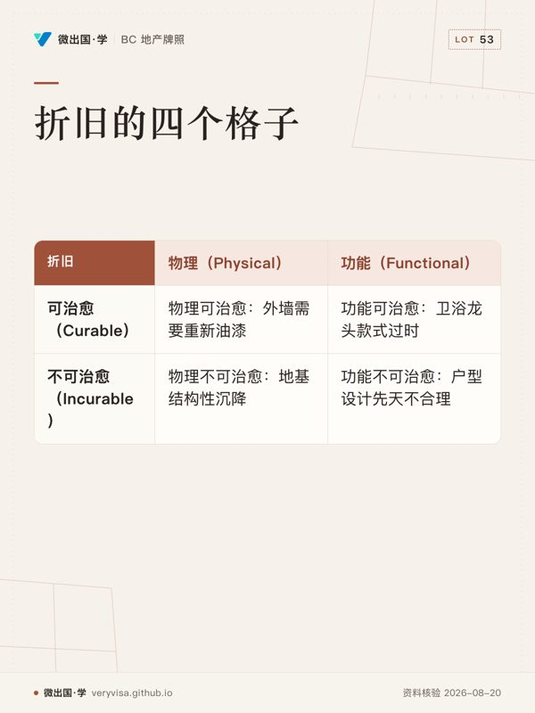

本章地位：估价三章（ch21–ch23）里的第二章。ch21 讲估价导论与最高最佳用途，
本篇讲最常用的两种方法——直接比较法（direct comparison / market approach）与
成本法（cost approach）——怎么落地到一栋独立屋上；ch23 讲收益法。
持牌代表在实务里几乎不做正式估价（那是 AIC 执业估价师的领域），
但直接比较法背后的调整逻辑，就是每一份 CMA（Comparative Market Analysis）的骨架，
这也是本篇把大量篇幅放在「怎么调、按什么顺序调」上的原因。
核实日期：2026-09-05，出处见文末源表。
一、这一章要回答的问题：谁在替谁定价，凭什么
本节回答This section answers 谁做的才算正式估价Whose work counts as a formal appraisal
一套房子没有像股票那样的公开报价，但买卖双方总要在成交前对"值多少钱"有个判断。
估价（appraisal）就是这个判断的专业化版本：由受过训练的第三方，
用一套可核查的方法，给出一个"市场价值"的意见。
制度上有两层角色，不能混用：
- 执业估价师（Appraiser，AIC 认证的 P.App 会员；BC 不对估价师发强制牌照，见 ch21）：受《加拿大统一专业估价执业准则》
（Canadian Uniform Standards of Professional Appraisal Practice, CUSPAP）约束，
出具正式估价报告，银行放贷、诉讼、保险理赔等场合认的是这份报告。
CUSPAP 现行版本是 CUSPAP 2026，2026-04-01 起对当日及以后完成的全部专业服务约定
（含追溯性评估）强制适用（Appraisal Institute of Canad…）。
- 持牌地产代表（licensee）：不受 CUSPAP 约束，做的是 CMA（Comparative Market Analysis）——
一份给卖家定价参考、给买家出价参考的市场分析，性质更偏"定性"，
比正式估价报告简短、非正式得多，且不能当成正式估价使用。
这两者用的底层方法高度重叠——CMA 几乎全靠直接比较法——所以本篇讲的调整逻辑，
持牌代表每天都在用；只是签字的份量不一样：估价师的报告是专业意见，
CMA 是给客户参考的市场分析，两者的法律责任与适用场合不同。
ℹ️
BC 的土地转让登记也会留一个"价值"的痕迹，但那不是估价
在 BC 办理产权转让登记时，申请人要在表格里申报一个物业价值估计（用于计算物业转让税）。
这个申报值不是经过分析的市场价值证据，只能作为一种参考指标——
双方关系、申报动机都不透明，不能当可比交易的直接证据用。
二、直接比较法的核心原理：替代原则
本节回答This section answers 近期和相似不能想当然Recent and similar cannot be assumed
直接比较法建立在一个简单的经济学原理上：在同样的市场条件下，
获得一件替代品所需的成本，等于为这件商品支付的价格。
股票的道理最直观：一股 A 公司的股票值多少钱，看的是市场上其他人正在为同一只股票
支付多少钱。房地产没有交易所报价，但逻辑一样：估价师找最近成交的、与待估物业相似的
物业（可比案例，comparables），用它们的成交价来推断待估物业（subject property）的价值。
这套方法成立的前提，是两个词的准确定义——"recent" 和 "similar"，
考试口径专门用两个小节展开，因为大多数估价错误都出在这两个词被想当然地理解上。
recent（近期）：没有一个固定的周数或月数
"近期"不是一个可以写进公式的固定期限（比如"六个月内"）。它指的是
评估日之前、市场供需条件保持相对稳定的那一段时间。市场剧烈波动的年份，
"近期"可能只有几周；市场平稳的年份，"近期"可以拉长到六个月甚至一年。
⚠️
用统一的价格指数把"不近期"的成交价拉到评估日，是常见的想当然做法
消费者价格指数、住房价格指数这类通用指数不能用来调整某一套具体房产的旧成交价——
房地产不是同质商品，一套具体物业的涨跌幅和城市大盘的涨跌幅经常不同步。
判断"近期"该到什么程度，靠的是估价师对这一个市场的第一手了解，不是查一个通用指数。
similar（相似）：只需要在影响买卖决策的因素上相似
"相似"不要求可比案例和待估物业处处一样——一栋房子刷白墙、一栋刷蓝墙，
这个差异根本不影响价格，可以直接忽略。真正需要相似的，是那些会实质性影响
买卖双方出价的因素，考试口径把它们分成三组：
- 建筑特征：设计（房间数、动线，而不是建筑风格本身）、建造与维护质量、
设备（洗碗机、空调这类固定装置）、房龄；
- 地块特征：自然条件（地势、景观）、周边人工设施的可达性（学校、交通、商店）、
地块尺寸（临街宽度比进深或总面积更重要——同区两块地，窄而深的那块通常卖得便宜些）；
- 产权与交易条件：有没有非市场化融资（下面详细展开）、买卖双方是不是关联方。
找可比案例最有效的办法是先限定在同一个街区——这样地块特征与周边设施这两组差异
可以直接忽略（对待估物业和可比案例的影响方向一致），只需要比建筑特征。
跨街区找可比案例，等于把"建立相似性"这一步的工作量翻倍。
三点检验
挑一个可比案例之前，逐条问：
- 成交时间是不是近期？
- 建筑与地块是不是相似？
- 产权与交易条件是不是相似？
三个都是"是"，才能进入调整环节；有一个是"否"，要么放弃这个案例，要么先想清楚
能不能通过调整把差异消化掉。考试口径建议至少准备四个可比案例——单一因素的干扰
（比如某一笔交易里买卖双方关系特殊而不自知）在多个案例互相印证下更容易被发现。
三、调整的方向：谁比谁强，钱往哪边走
本节回答This section answers 可比案例之间不互相调整Comparables are not adjusted toward each other 本章考题 1Question 1
找到可比案例后，估价师不能改变待估物业的物理属性，只能调整可比案例的成交价，
把它"调"成待估物业的样子——待估物业永远是比较的基准，可比案例向它靠拢，
可比案例之间不互相比较。
方向规则（考试口径 Figure 22.2 的逻辑，本篇用自设情景复述）：
记忆的关键不是背这张表，是想清楚方向：可比案例"更好"的地方，
它的成交价里已经包含了这份溢价——要把这份溢价减掉，才能让它跟"没有这个优点"
的待估物业可比；可比案例"更差"的地方，同理要把缺失的价值补上去。
⚠️
车位算不算钱，先问"市场会不会为它多付钱"，别用成本替代市场判断
假设待估物业有一个装修花了 $45,000 的地下影音室，可比案例没有这个装修。
正确的调整额不是 $45,000（装修实际花费），而是市场愿意为这个装修多付多少钱——
很可能远低于装修成本，因为下一个买家未必需要这个功能。
调整用的是市场证据，不是成本凭证；这条规则在成本法那一节还会再出现一次，
因为它是两种方法共有的一个陷阱。
四、调整的顺序：为什么必须先处理交易条件，再处理物理特征
本节回答This section answers 算出零也要走完该步A calculated zero still means the step was taken 本章考题 2Question 2 本章考题 3Question 3
 图：直接比较法四步调整——先处理交易噪音，再比较物理特征
图：直接比较法四步调整——先处理交易噪音，再比较物理特征
调整不是想到哪个调哪个，必须按顺序做，原因是后面的调整依赖前面调整算出的"干净"价格：
- 融资条件（现金等价化, cash equivalency）：如果卖方提供了低于市场利率的
卖方融资（vendor take-back mortgage, VTB），买方等于额外拿到了一份"隐性折扣"，
成交价虚高了。要先把这份隐性折扣算出来并扣掉，把成交价换算成现金等价价格。
- 交易条件（conditions of sale）：买卖双方是不是关联方、是不是特殊关系交易
（父女之间、雇主卖给雇员）——这类交易的成交价不能反映真实市场价值，
轻则调整，重则整个案例弃用。
- 市场条件／时间（market conditions）：把"现金等价、交易条件正常"的价格，
从成交当天的市场水平，调整到评估日当天的市场水平。
- 物理特征（物业本身的建筑与地块差异）：只有前三步都处理完，
剩下的价格差异才纯粹是物理特征造成的，这时候比较建筑与地块的差异才有意义。
为什么顺序不能反：如果先调物理特征、再调融资，就是在一个被虚高的价格基础上
计算物理特征的调整额，物理调整算出来的百分比会被这个虚高的基数拉低估。
先把交易本身的"噪音"去掉，剩下的才是一个"干净"的市场价格，物理特征才能公平比较。
🔧
卷面上这四步是逻辑框架，实务上不是每一步都会用到
大多数居民物业交易是全现金或标准银行按揭，没有 VTB，融资调整多数时候是 $0；
双方也多数是无关联的正常交易，交易条件调整多数时候也是 $0。
但"这一步是 $0"和"这一步没有想过"是两件事——卷面上考的是有没有按顺序走完
这四步（哪怕某一步的答案是零），实务里漏想一步比漏调一步的后果更隐蔽：
你不会立刻发现算错，但基数已经悄悄错了。
净调整与总调整：一个看起来完美的可比案例，可能根本不是可比案例
判断一个可比案例可不可靠，光看净调整（把加减都算完之后的净额）会被误导。
假设评估一栋位于素里（Surrey）的全新独立屋，找到的"可比案例"是本拿比（Burnaby）
一块滨河的空地，成交价 $1,200,000。因为这块地上没有建筑物，
估价师要扣掉 $900,000（房屋的市场贡献）；因为它是滨河地段，
估价师要再加上 $900,000（景观溢价）。
净调整 = -$900,000 + $900,000 = $0
总（绝对值）调整 = $900,000 + $900,000 = $1,800,000
总调整占成交价比例 = $1,800,000 ÷ $1,200,000 = 150%
净调整是 $0，看起来这是个完美的可比案例——但总调整高达 150%，
说明这两处物业根本不是同一类东西，只是两个巨大的正负调整恰好抵消了。
考试口径给出的经验法则是：总调整一般不应超过成交价的 20%（VTB 类融资调整可以例外）。
调整项越多、总调整占比越高，这个可比案例的支撑力就越弱——
可比案例的成交价好比树干，每加一项调整就是往外多长一根树枝，
树枝越多、越细，能提供的支撑就越薄弱。
五、案例一：三个可比案例，从成交价算到指示价值
本节回答This section answers 先得到干净价再比房子Reach a clean price before comparing the houses 本章考题 4Question 4
下面的物业、日期、金额均为本篇自设的教学示例（2026 年整数假设），不对应任何真实地址或交易。
待估物业 S：温哥华都会区某街区，2,000 平方英尺独立式牧场平房，2015 年建成，
6,000 平方英尺地块，附带一个双车位车库，2 个完整卫浴，原始厨房未翻新，
地下室有一间装修好的娱乐室。评估日：2026-06-01。为演示计算，
本篇假设该区域近半年市场按月均值 0.5% 稳定增值（自设假设，非任何官方指数，
实务中这类假设必须用同类物业的时间序列成交或配对销售分析自行验证）。
三个可比案例都在同一街区，满足"三点检验"：
第一步：融资（现金等价化）与交易条件
- A：VTB 使 A 的成交价含有 $12,000 的"低息融资溢价"——A 在融资上优于待估物业，
从 A 的价格里减去 $12,000。
- B、C：现金交易，融资调整为 $0。
- 三个案例都是无关联正常交易，交易条件调整均为 $0。
第二步：市场条件（时间）——把每笔成交价从成交当月调整到评估日当月，
按月均 0.5% 累计：
A：0.5% × 4 个月 × $850,000 = $17,000（加，因为市场之后又涨了）
B：0.5% × 2 个月 × $860,000 = $8,600
C：0.5% × 0.5 个月 × $840,000 = $2,100
到这一步，三个案例都已经是"现金等价、交易条件正常、按评估日市场水平换算过"的
干净价格：A 为 $855,000（850,000－12,000＋17,000）、B 为 $868,600、C 为 $842,100。
第三步：物理特征
- A：多 1 个半卫浴（A 优于待估物业）→ 减 $9,000；地块小 500 平方英尺（A 劣于待估物业）→ 加 $6,000。净物理调整 －$3,000。
- B：没有车库（B 劣于待估物业）→ 加 $18,000（这个数字怎么来的，见案例三的配对销售分析）；多 1 个半卫浴（B 优于待估物业）→ 减 $9,000（与 A 的同一项调整一致）。净物理调整 ＋$9,000。
- C：没有装修娱乐室（C 劣于待估物业）→ 加 $15,000；厨房翻新过（C 优于待估物业）→ 减 $20,000。净物理调整 －$5,000。
评级表汇总
三个指示价值落在 $837,100 至 $877,600 之间，三个总调整都远低于 20% 的经验上限，
说明这三个可比案例整体可靠。
结论怎么选，不是三个数字平均：B 的总调整比例最低（4.1%），
且 B 最主要的一项物理调整——车库 $18,000——有案例三的配对销售分析直接支持，
不是估价师凭经验拍的数字，可靠性比 A、C 里那些"感觉出来"的调整更强；
综合 A、C 的区间做交叉验证，本例把待估物业 S 的指示价值定为 $878,000
（就近取整，贴近 B 并落在三者区间内）。
ℹ️
不是每一份估价都用平均数
把三个指示价值加总除以三得到的数字，不是这道题的正确解法。
考试口径明确提醒：估价师的工作是判断"哪个可比案例最像待估物业、调整最少最可靠"，
用那个作为主要依据，其余案例做区间验证——机械平均会把一个调整很粗糙的案例
和一个调整很扎实的案例赋予同样的权重，稀释掉更可靠的那个证据。
六、直接比较法的适用范围与局限
本节回答This section answers 收益型物业不能按比例套Income property is not scaled in proportion
直接比较法最适合同类交易量大的物业——独立屋、公寓单位——因为不缺可比案例。
它不适用或效果差的场景：
- 待估物业本身罕见，市场上很少有类似交易（特殊用途建筑、非典型户型）；
- 市场剧烈波动，导致找不到真正"近期"的可比案例；
- 收益型物业（出租公寓楼、商业物业）：净收益与风险程度在不同物业间差异很大，
仅靠"相似"很难站得住——一栋净收益 $100,000 的公寓楼卖 $2,400,000，
不代表净收益 $50,000 的另一栋就该卖 $1,200,000（要求回报率可能不同、
租约剩余年限也会造成差异）。这类物业更适合用收益法（ch23）。
共管公寓（strata / condominium）需要额外核对两组因素，光看单元本身的户型、
面积、楼龄不够：
- 共同区域的权益是否相似——两个大楼是否都有健身房、泳池、会所这类设施；
- 共同费用的分摊方式与项目是否相似——按面积比例还是按其他方式分摊、
暖气算不算在共同费用里、大楼名下有没有额外资产或负债（比如共同区域名下的
未用地皮，或者反过来共同区域背着按揭）。
两个问题都要回答"是"，才能把两个共管单位当彼此的可比案例。
七、成本法：另起一条路径算价值
本节回答This section answers 成本等于价值要有条件Cost equals value only when a condition is met
成本法的假设听起来很直白：土地价值 ＋ 建筑物的重置成本 － 折旧 ＝ 市场价值。
但这个假设成立是有条件的——只有当待估物业的现状代表其最高最佳用途时，
成本才约等于价值：如果盖一栋楼的成本高于它建成后的市场价值，新开发会停下来，
直到房价涨回成本线；反过来成本低于价值，开发会一直增加直到成本追上价值。
极北苔原上盖一座五星级酒店这种情形——成本花出去了，但市场根本不认这个地段——
就是成本≠价值的极端例子。
成本法有两大基本要素：
土地价值（Site Value）
＋ 建筑物重置成本（Cost of Improvements）
－ 折旧（Depreciation）
＝ 市场价值（Market Value）
土地价值本身通常还是靠直接比较法估出来的——土地没有"生产成本"这种东西，
只能拿同类空地的成交价来比较。
重置成本 vs 重建成本，历史成本 vs 现行成本
两组容易混淆的概念，各自只有一个正确答案：
- 重建成本（reproduction cost）：造一个待估建筑物一模一样的复制品要花多少钱；
重置成本（replacement cost）：造一个功能等价的现代版本要花多少钱。
成本法一律用重置成本——旧建筑用的工艺、材料现在未必还找得到，
就算找得到，一比一复刻出来的成本往往比现代等效版本更贵，建成后市场却未必更认可
（现代人未必想要一栋"每个房间都有独立房门"的老式布局）。
- 历史成本（historic cost）：建造当年实际花的钱；
现行成本（current cost）：在评估日建造同一栋房子要花多少钱。
成本法一律用现行成本——货币购买力与建材、人工价格都随时间变化，
25 年前的实际造价对今天的估值毫无意义。
✕
别把"当年花了多少钱"当成算价值的起点
客户说"我这栋房子当年装修花了 $80,000，成本法应该把这 $80,000 算进去"——
这是把历史成本误当成现行成本，也是把成本误当成市场愿意付的钱
（回到第四节的那条陷阱）。成本法要的是"今天重新造一个功能等价物要花多少"，
不是"当年真实花了多少"。
成本数据从哪儿来：单位成本法
最常用的估算办法是单位成本法（unit cost method）：把建造总成本换算成
每平方英尺（住宅通行做法）或每立方英尺（工业厂房通行做法）的单价，
再乘以待估建筑的面积或体积。这个单价来自专业成本手册对同类"样板房"的造价拆解，
估价师找一栋跟待估建筑最接近的样板房类型，套用它的单价，再对细微差异做小幅调整。
ℹ️
考试口径举的成本手册工具名，2026 年公司名字变了，工具还在
考试口径附录举的例子是「CoreLogic – SwiftEstimator」，用的是 Marshall & Swift
成本估价体系。2025-03-24 起 CoreLogic 已全球更名为 Cotality（品牌与业务延续，
公司未消失、未退出市场），Marshall & Swift 这个成本估价品牌仍在运营，
现属 Cotality 旗下产品（Cotality（原 CoreLogic，官方新闻稿）、Cotality（原 CoreLogic，产品页，域名沿…）。加拿大地产开发与估价行业
另有一套年度基准——Altus Group《Canadian Cost Guide》，每年发布一版
（2026 版已于 2026-04-23 发布），是 Marshall & Swift／Cotality 之外
估价师常用的加拿大本地成本数据源（Altus Group（企业官网新闻稿））。卷面上如果考"成本数据来源"，
答的是"专业成本手册"这个方法论本身；实务里工具的公司名、版本号年年可能变，
且具体每平方英尺单价本身就是每年更新的数字，本篇不给任何快照数——
用的时候一律查当年最新版本，不要抄旧资料上的单价。
八、折旧：四个格子，两条判断轴
本节回答This section answers 可治愈只看修得值不值Curable looks only at whether the repair pays
现行成本减去的折旧，考试口径分成两条判断轴，交叉出四个格子：
判断"可治愈"还是"不可治愈"的唯一标准是经济性：修复成本是不是低于
修复后带来的价值增量。低于就是可治愈，扣的是修复成本；
高于就是不可治愈，扣的是估价师的专业判断（往往用"有效年龄 ÷ 经济寿命"
这类比例法估算，因为不可治愈的折旧没有一个明确的"修多少钱"可以直接查）。
物理不可治愈折旧最常见的估算法是直线法（straight-line）：
假设一栋建筑的经济寿命是 N 年、到期残值为零，那么每年折旧额 ＝ 重置成本 ÷ N，
乘以建筑的有效年龄（不一定等于实际建成年数——保养特别好的老房子，
有效年龄可以小于实际年龄；反之亦然）。
九、案例二：一栋 15 年独立屋的成本法全流程
本节回答This section answers 折旧后的建筑物再加土地Add the land to the building after depreciation 本章考题 5Question 5
同样是自设的教学整数示例，不对应任何真实地址、任何成本手册的现行单价。
待估物业：2,000 平方英尺独立式住宅，实际建成 15 年，评估师判断有效年龄与
实际年龄一致（保养正常）。土地价值已用直接比较法单独估出为 $650,000。
估价师查阅当期成本手册，本例假设该类型住宅当年现行重置成本单价为
每平方英尺 $220（自设整数，实务中一律用当年成本手册的现行单价，不得沿用旧值）。
A. 重置成本（新建，Replacement Cost New）
2,000 平方英尺 × $220/平方英尺 = $440,000
B. 减：折旧
估价师现场检查后，逐格给出估计：
折旧后重置成本 = $440,000 － $140,000 = $300,000
C. 加：土地价值
$300,000 ＋ $650,000（土地价值，直接比较法估出）＝ $950,000
D. 市场价值（成本法指示）＝ $950,000
✕
折旧的四格不能互相顶替
物理不可治愈的 $120,000 不能因为"反正都是折旧"就和功能不可治愈的 $8,000 合并成
一个模糊的"综合折旧率"——四格分别对应不同的成因（结构老化 vs 户型设计），
拆开写才能让报告的读者（客户、贷款机构、法院）看懂折旧到底来自哪里，
也才能在物业翻新后正确地把"可治愈"那两格重新计算（一旦维修完成，
可治愈折旧应当归零，不可治愈折旧才需要重新评估有效年龄）。
十、案例三：配对销售法——车库那 $18,000 是怎么算出来的
本节回答This section answers 价差只归因于那一项The price gap is attributed only to that one item
上面案例一里，可比案例 B 因为没有车库被加了 $18,000，这个数字不是拍脑袋定的，
而是配对销售法（paired sales analysis）推导出来的——找两笔几乎完全相同、
只有一项特征不同的近期交易，用成交价之差反推那一项特征的市场贡献。
同一街区两栋几乎一模一样的联排别墅：
- 物业 P1（只有露天车位，没有车库）：2026-03-10 成交，$700,000；
- 物业 P2（其余条件完全相同，但带一个附建双车位车库）：2026-03-25 成交，$718,000。
两笔交易相隔仅 15 天，同一区域、同一市场条件下，视为不需要时间调整：
配对差额 = $718,000 － $700,000 = $18,000
在其余条件都相同的前提下，这 $18,000 的差额只能归因于那一个双车位车库——
这就是它被用在案例一里作为车库调整额的市场依据。
🔧
配对销售法的适用条件比它看起来更苛刻
这个方法只在真的能找到"只差一项"的两笔交易时才可靠——现实中很难找到
两处物业除了一项特征外处处相同。找不到严格意义上的配对时，
估价师退而求其次，用统计方法（多笔交易做回归）或经验判断估算特征贡献，
但这时候的可信度就要打折扣，报告里应当说明依据的性质。卷面上考的是
"为什么这个方法能孤立出单一特征的价值"（控制变量的逻辑）；实务里给客户解释
一个装修/设施到底值多少钱时，能拿出配对销售证据远比"我觉得值这个数"有说服力。
十一、成本法的适用范围与局限
本节回答This section answers 特殊用途和分拆才优先Special-purpose property and a split come first
成本法最适合两类场景：
- 市场上找不到足够可比交易的特殊用途建筑——教堂、政府建筑、其他专用物业；
- 需要把土地和建筑物价值分开列示的场合——保险理赔（只赔建筑物重置，不赔土地）、
物业税评估。
成本法在住宅市场价值评估里通常只作为最后手段或交叉验证，原因有二：
- 折旧估计的主观性——尤其是"不可治愈"那两格，没有一个可以直接核对的公式；
- 成本≈价值这个前提本身要成立才行——物业越老，成本与市场价值脱钩的可能性越大，
所以成本法对新建物业最可靠，对老旧物业参考价值递减。
共管公寓单位几乎从不用成本法估值：要单独估出一个单元的价值，
理论上得把整栋楼的地价、全部建筑成本、软成本、开发利润都算清楚再按比例分摊，
这份工作量远超一个单元估价愿意支付的费用；而且单元估价师通常看不到
屋顶、机房、地下车库这些公共部分的实际状况，用通用表格勾选"状况良好"
这类笼统结论反而可能误导。
十二、柜台上怎么做
本节回答This section answers 挂牌用分析，正式场合转介Use an analysis for the list price and refer a formal need
- CMA 不是正式估价，别把两者混为一谈——CMA 给客户一个市场参考区间与建议定价，
遇到贷款、诉讼、遗产分割这类需要专业估价意见的场合，转介给 AIC 认证的执业估价师。
- 调整永远按顺序走：先融资与交易条件，再市场条件（时间），最后才是物理特征——
哪怕某一步的答案是 $0，也要走完这四步，不要跳步。
- 调整金额要有市场依据，不能用装修成本、客户报价直接替代——能找到配对销售证据
最好，找不到就说明这是基于经验的估计，别把估计包装成精确值。
- 总调整占比是可比案例质量的信号：单个总调整明显超过 20%（VTB 融资调整除外），
要重新考虑这个案例是不是真的可比，而不是硬调下去。
- 共管公寓做 CMA，先核对共同区域权益与共同费用分摊方式，
户型面积楼龄再像，这两条对不上照样不算真正可比。
十三、两个容易踩空的场景
本节回答This section answers 发票不加价，共管先核对Do not add the invoice, and check the strata sale first
场景一：客户坚持装修花了多少钱就该多卖多少钱。 屋主 Wendy 三年前花 $45,000
装修了一间专业级家庭影音室，坚持挂牌价要比周边可比案例高出这整整 $45,000。
持牌代表的正确做法不是照单全收，而是向 Wendy 解释：市场愿意为这间影音室
多付的钱，取决于有多少潜在买家真的需要这个功能，很可能远低于装修的实际花费——
可以参考类似装修的可比案例成交价差（配对销售法的思路）给出一个更贴近市场的区间，
而不是简单地把成本加到成交价上。
场景二：两个共管公寓单元，户型、楼层、朝向都接近，却不能直接互相当可比案例。
持牌代表 Raj 在给一套公寓单位做 CMA 时，找到楼下同户型单元最近的成交案例，
但发现两栋楼虽然户型相似，其中一栋的共同费用包含供暖、另一栋供暖单独计费，
且一栋大楼名下持有一块尚未开发、有潜在价值的公共土地，另一栋没有。
Raj 没有直接套用这个"看起来一样"的可比案例，而是先核对共同区域权益与
共同费用分摊方式，确认差异后再决定要不要纳入、要不要额外调整——
这正是第六节强调的、共管公寓比较必须额外核对的那两组因素。
术语双语对照
考试口径 vs 现行对照表
本节回答This section answers 卷面答手册方法不背单价On the exam, answer the manual method and do not memorize the unit price
这一章的对照表和其他章不太一样：没有一条是"法律规定变了"，
三条都是举例用的公司名、版本号该更新了，或者确认成本数据按年更新的机制依然成立——
调整逻辑、折旧分类这些方法论不会因为哪部法律修订而改变，会过期的只是具体名字与年份。
延伸阅读
论坛全文：BC房产估价2026：比较法与成本法怎么用
源表（本篇判据）
本篇不给的数字：任何"当年现行"每平方英尺重置成本单价
（本篇案例二的 $220/平方英尺是自设教学整数，不是任何成本手册的现行值）；
Altus《Canadian Cost Guide》与 Marshall & Swift 数据库里的具体分区域单价；
案例一假设的月度市场增值率 0.5%（自设教学假设，非任何官方或行业指数）。
本页知识卡
不看正文也能拿到这一节的核心内容：先看导读，再看图。点图放大，左右翻页。
放大 ⤢调整逻辑、折旧分类不会因为法律修订而改变。- 先看先看首行：名称更新，不等于品牌与业务消失。
- 易漏三条都不是法律规定变了；会过期的是具体公司、版本号与年份。
- 下一步去讲义核对具体公司、版本号与按年更新机制。
详情与分享 →
放大 ⤢可治愈与否的唯一标准是经济性。- 先看先沿可治愈这一轴看，真正分界是修复成本与价值增量。
- 易漏有效年龄不一定等于实际建成年数，保养情况会改变判断。
- 下一步去练习，用经济性判断每个例子落在哪个格子。
详情与分享 →
本站依据官方原文自撰 · 出处见正文链接